228 equations — 228 machine-verified, 0 flagged. Green = verified, amber = flagged (still shows best LaTeX + source crop).
| # | ID | Status | Rendered (KaTeX) | Source crop (PDF) |
|---|---|---|---|---|
| 1 | V-6-1 | agreed_gt | $$Q_{net} = Q_R - Q_L$$ | 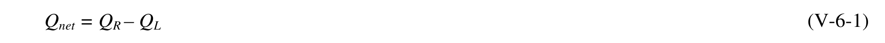 |
| 2 | V-6-2 | agreed_gt | $$Q_{gross} = Q_R + Q_L$$ | 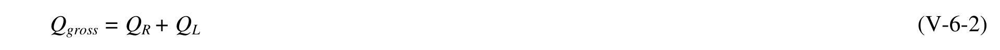 |
| 3 | V-6-3 | single_verified | $$\frac{y}{Y} = \left[ \exp(-u^2) - \sqrt{\pi}u \ erfc(u) \right]$$ | 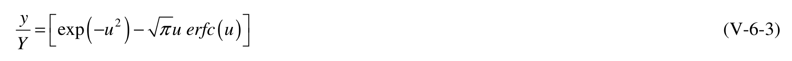 |
| 4 | V-6-4 | agreed_gt | $$u = \frac{x}{y} \frac{1}{\sqrt{\pi}} \tan \alpha_b$$ | 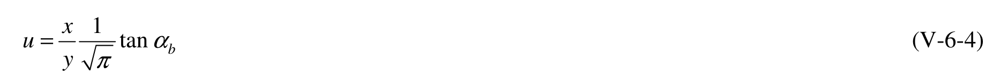 |
| 5 | V-6-5 | agreed_gt | $$t_f = \pi Y^2 / 4g \tan^2(\alpha_b)$$ | 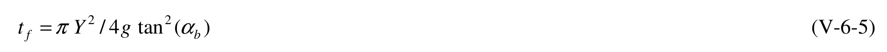 |
| 6 | V-6-6 | agreed_gt | $$\varepsilon = \frac{K H_b^{25} \sqrt{g/\kappa}}{8(s-1)(1-n)(h_* + B)}$$ | 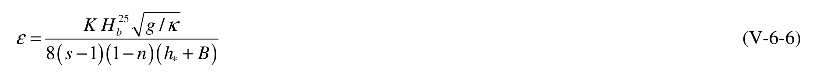 |
| 7 | V-6-7 | agreed | $$y(x,t) = \frac{2p Q_I \sqrt{t}}{(h_* + B)\sqrt{\pi \varepsilon}} y'$$ | 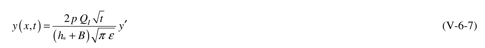 |
| 8 | V-6-8 | agreed_gt | $$p = \frac{\text{(sand lost to inlet from shoreline of interest)}}{\text{(sand lost to inlet from both shorelines)}}$$ | 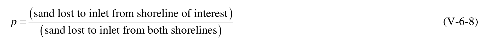 |
| 9 | V-6-9 | agreed | $$y' = \left\lceil \sqrt{\pi} \, v \, erfc \left( v \right) - \exp\left( -\left( v^2 \right) \right) \right\rceil$$ | 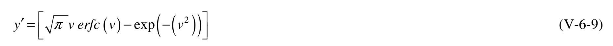 |
| 10 | V-6-10 | agreed | $$v = \frac{|x|}{\sqrt{4gt}} \quad ; \quad |x| = v\sqrt{4gt}$$ | 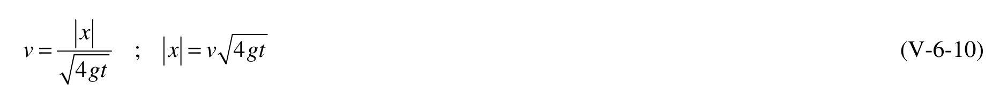 |
| 11 | V-6-11 | agreed_gt | $$\varepsilon = \frac{KH_b^{2.5} (g/\kappa)^{0.5}}{(8)(S-1)(1-n)(h_*+B)}$$ | 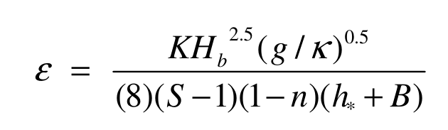 |
| 12 | V-6-12 | agreed_gt | $$\varepsilon = \frac{(0.5)(0.8m)^{2.5}(9.81m \sec^{-2}/0.8)^{0.5}}{(8)(2.65-1)(1-0.4)(6m+2m)}$$ | 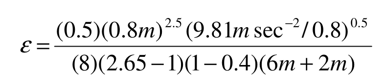 |
| 13 | V-6-13 | agreed_gt | $$\varepsilon = 0.0158m^2 / \sec = 498,600m^2 / year$$ | 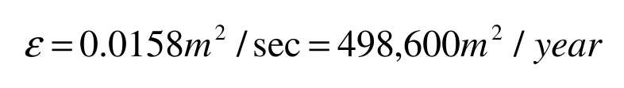 |
| 14 | V-6-14 | single_verified | $$t_f = \pi Y^2 / 4\varepsilon (\tan \alpha_b)^2$$ | 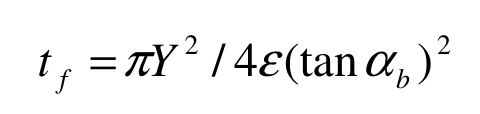 |
| 15 | V-6-15 | agreed_gt | $$t_f = \frac{(3.1416)(240m)^2}{(4)(0.0158m^2/\sec)(\tan 4.0)^2}$$ | 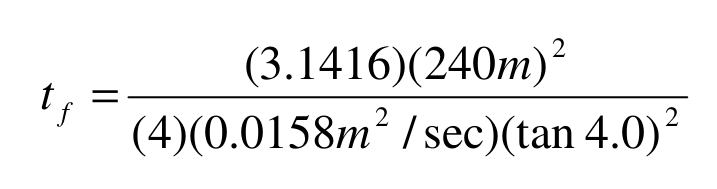 |
| 16 | V-6-16 | single_verified | $$t _ { { \scriptscriptstyle f } } = 5 . 8 5 \mathrm { \, x \, } 1 0 ^ { 8 } s { \mathrm { e c } } = 1 8 . 5 y e a r s$$ | 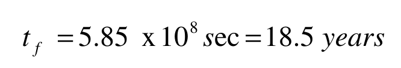 |
| 17 | V-6-17 | resolved | $$\nu = \frac{\left| x \right|}{(4\varepsilon t_{f})^{0.5}} = \frac{\left| x \right|m}{\left[ (4)(0.0158m^2/sec)(5.85 \times 10^8 sec) \right]^{0.5}} = \frac{\left| x \right|}{6080}$$ | 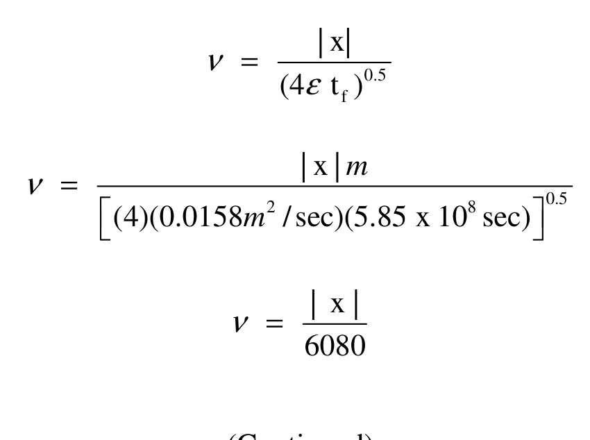 |
| 18 | V-6-18 | agreed_gt | $$y(x,t) = \frac{2p Q_I(t)^{0.5} y'}{(h_* + B)(\pi \varepsilon)^{0.5}}$$ | 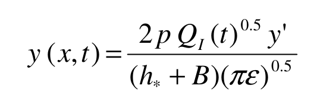 |
| 19 | V-6-19 | agreed_gt | $$y = \frac{(2)(0.9)(55,000m^3 / year)(18.5 years)^{0.5} y'}{(6m + 2m)[(3.1416)(498,600m^2 / year)]^{0.5}}$$ | 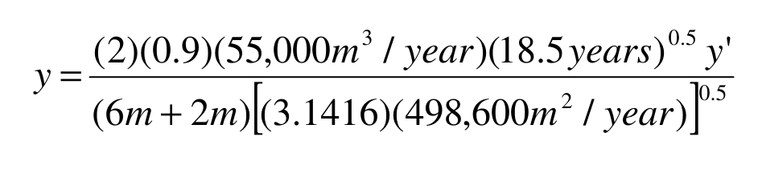 |
| 20 | V-6-20 | agreed_gt | $$y = 42.5y'(m)$$ | 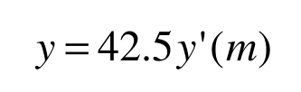 |
| 21 | V-6-11 | agreed_gt | $$y ( x ) = y _ { \mathit { \Pi } _ { E } } ( x ) + y _ { o } ( x )$$ | 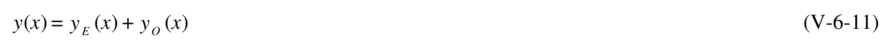 |
| 22 | V-6-12a | agreed_gt | $$y_E(x) = [y(x) + y(-x)]/2$$ | 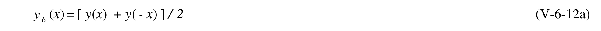 |
| 23 | V-6-12b | agreed_gt | $$y_o(x) = [y(x) - y(-x)]/2$$ | 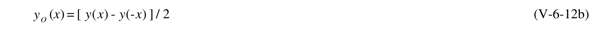 |
| 24 | V-6-13 | agreed | $$G_p = \frac{\Delta V}{\Delta y} = \frac{\text{volume change per unit shoreline length}}{\text{change of shoreline location}}$$ | 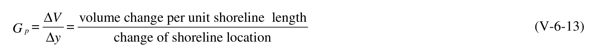 |
| 25 | V-6-25 | agreed_gt | $$y _ { \mathit { \Pi } _ { E } } ( x ) = { \frac { y ( x ) + y ( - x ) } { 2 } }$$ | 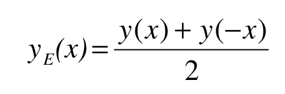 |
| 26 | V-6-26 | agreed_gt | $$y_O(x) = \frac{y(x) - y(-x)}{2}$$ | 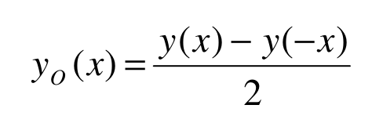 |
| 27 | V-6-27 | agreed_gt | $$y_E(2,000) = \frac{(-9) + (5)}{2} = -2$$ | 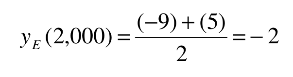 |
| 28 | V-6-28 | agreed_gt | $$y_o(2,000) = \frac{(-9) - (5)}{2} = -7$$ | 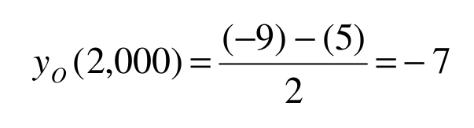 |
| 29 | V-6-29 | agreed_gt | $$y_E(-2,000) = \frac{(5) + (-9)}{2} = -2$$ | 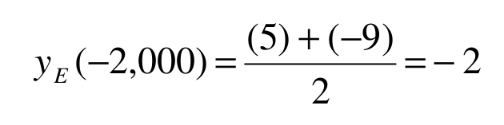 |
| 30 | V-6-30 | agreed_gt | $$y_o(-2,000) = \frac{(5) - (-9)}{2} = 7$$ | 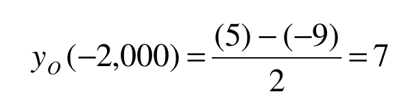 |
| 31 | V-6-31 | agreed_gt | $$[(-4 - 5 - 5 - 1 + 5 + 22 + 35 + 50)(500) + (45)(250)](6) = 358,500 \text{ cu m}$$ | 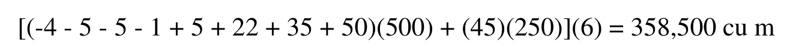 |
| 32 | V-6-32 | single_verified | $$y_E(x) = \frac{y(x) + y(-x)}{2}$$ | 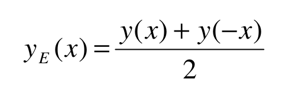 |
| 33 | V-6-33 | single_verified | $$y_O(x) = \frac{y(x) - y(-x)}{2}$$ | 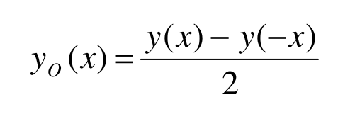 |
| 34 | V-6-34 | single_verified | $$y_E(2,000) = \frac{(-75) + (-2)}{2} = -38.5$$ | 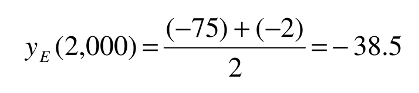 |
| 35 | V-6-35 | agreed_gt | $$y_{O}(2000) = \frac{-75 - (-2)}{2} = -36.5$$ | 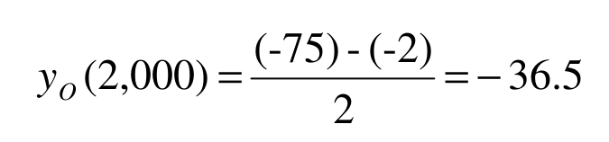 |
| 36 | V-6-36 | single_verified | $$y_E(-2,000) = \frac{(-2) + (-75)}{2} = -38.5$$ | 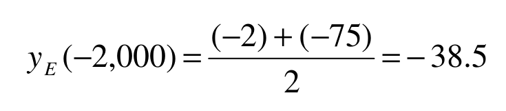 |
| 37 | V-6-37 | single_verified | $$y_o(-2,000) = \frac{(-2) - (-75)}{2} = 36.5$$ | 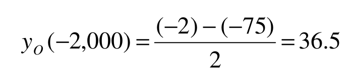 |
| 38 | V-6-14 | agreed | $$H_b \sim \frac{A_I}{I - \frac{1}{5} A_I A_2}$$ | 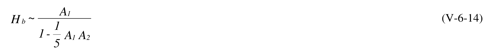 |
| 39 | V-6-15 | agreed | $$\alpha_b = \sin^{-1} \left[ \frac{\sin \hat{\alpha}}{C} \sqrt{g H_b / \kappa} \right]$$ | 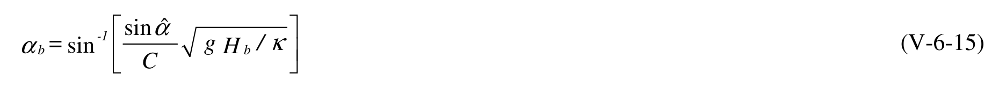 |
| 40 | V-6-16a | agreed_gt | $$A_1 = (\kappa / g)^{1/5} H^{4/5} (C_g \cos \hat{\alpha})^{2/5}$$ | 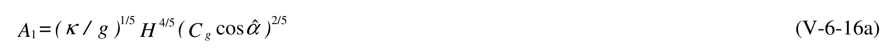 |
| 41 | V-6-16b | agreed_gt | $$A_2 = g(\sin \hat{\alpha})^2 / C^2$$ | 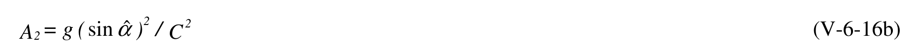 |
| 42 | V-6-17 | agreed_gt | $$\hat{\alpha} = \alpha - \beta$$ | 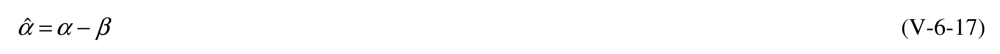 |
| 43 | V-6-18 | agreed | $$Q = K' H_b^{5/2} \sin(2\alpha_b)$$ | 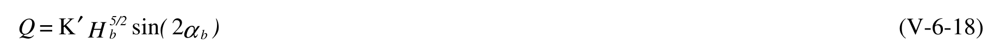 |
| 44 | V-6-19 | agreed | $$K' = \frac{K\sqrt{g}}{16(s-1)(1-n)}$$ | 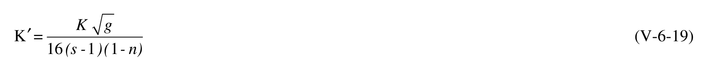 |
| 45 | V-6-45 | single_verified | $$\hat{\alpha} = \alpha - \beta$$ | 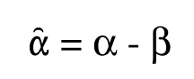 |
| 46 | V-6-46 | agreed_gt | $$H_b = \frac{A_1}{1 - \frac{A_1 A_2}{5}}$$ | 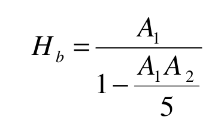 |
| 47 | V-6-47 | agreed_gt | $$\alpha_b = \sin^{-1} \left[ \frac{\sin \hat{\alpha}}{C} (gH_b / \kappa)^{0.5} \right]$$ | 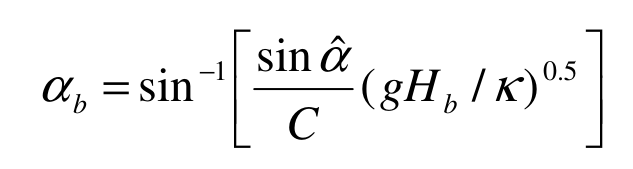 |
| 48 | V-6-48 | agreed_gt | $$A_1 = (\kappa/g)^{0.2} H^{0.8} (C_g \cos \hat{\alpha})^{0.4}$$ | 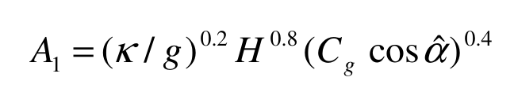 |
| 49 | V-6-49 | agreed_gt | $$A_2 = \frac{g(\sin \hat{\alpha})^2}{C^2}$$ | 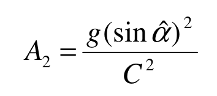 |
| 50 | V-6-50 | agreed_gt | $$C = L/T$$ | 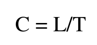 |
| 51 | V-6-51 | single_verified | $$L = \frac{gT^2}{2\pi} \tanh\left(\frac{2\pi h}{L}\right)$$ | |
| 52 | V-6-52 | agreed_gt | $$C_g = \frac{1}{2} \frac{L}{T} \left[ 1 + \frac{\frac{4\pi h}{L}}{\sinh \frac{4\pi h}{L}} \right]$$ | |
| 53 | V-6-53 | agreed_gt | $$C_g = \frac{1}{2} \frac{36.27m}{9 \text{ sec}} \left[ 1 + \frac{\frac{(4)(\pi)(1.7m)}{36.27m}}{\sinh \frac{(4)(\pi)(1.7m)}{36.27m}} \right]$$ | |
| 54 | V-6-54 | single_verified | $$C_g = 3.91 \, m / \sec$$ | |
| 55 | V-6-55 | agreed | $$\hat{\alpha} = \alpha - \beta = 5.6 \deg - 2.0 \deg = 3.6 \deg$$ | |
| 56 | V-6-56 | single_verified | $$A _ { 1 } = ( \kappa / g ) ^ { 0 . 2 } H ^ { 0 . 8 } ( C _ { g } \cos \hat { \alpha } ) ^ { 0 . 4 }$$ | |
| 57 | V-6-57 | agreed | $$A_{1} = (0.8/9.81m \sec^{-2})^{0.2} (0.57m)^{0.8} (3.91m \sec^{-1} \cos 3.6 \deg)^{0.4}$$ | |
| 58 | V-6-58 | single_verified | $$A _ { 1 } = 0 . 6 7 7 m$$ | |
| 59 | V-6-59 | single_verified | $$A _ { 2 } = g ( \sin \hat { \alpha } ) ^ { 2 } / C ^ { 2 }$$ | |
| 60 | V-6-60 | single_verified | $$A_2 = 9.81 m \,\mathrm{sec}^{-2} (\sin 3.6 \,\mathrm{deg})^2 / (4.03 m \,\mathrm{sec}^{-1})^2$$ | |
| 61 | V-6-61 | agreed_gt | $$A_2 = 0.00238 \ m^{-1}$$ | |
| 62 | V-6-62 | agreed_gt | $$H_b = \frac{A_1}{1 - \frac{A_1 A_2}{5}} = \frac{0.0667m}{1 - \frac{(0.667m)(0.00238m^{-1})}{5}}$$ | |
| 63 | V-6-63 | agreed_gt | $$H_b = 0.067 \ m$$ | |
| 64 | V-6-64 | agreed_gt | $$\alpha_b = \sin^{-1} \left[ \frac{\sin \hat{\alpha}}{C} (gH_b / \kappa)^{0.5} \right]$$ | |
| 65 | V-6-65 | agreed | $$\alpha_b = \sin^{-1} \left( \sin 3.6 \deg / 4.03 m \sec^{-1} \right) \left[ (9.81 m \sec^{-2}) (0.67 m) / 0.8 \right]^{0.5}$$ | |
| 66 | V-6-66 | agreed_gt | $$\alpha_b = 2.56 deg$$ | |
| 67 | V-6-67 | agreed_gt | $$Q = K' H_b^{2.5} \sin(2\alpha_b)$$ | |
| 68 | V-6-68 | agreed_gt | $$K' = \frac{Kg^{0.5}}{16(S-1)(1-n)}$$ | |
| 69 | V-6-69 | agreed_gt | $$K' = \frac{(0.5)(9.81m \sec^{-2})^{0.5}}{(16)(2.65-1)(1-0.4)}$$ | |
| 70 | V-6-70 | agreed_gt | $$K' = 0.099m^{0.5} \text{ sec}^{-1}$$ | |
| 71 | V-6-71 | single_verified | $$Q = (0.099m^{0.5} \text{ sec}^{-1})(0.67m)^{2.5} [\sin(2)(2.56 \text{ deg})]$$ | |
| 72 | V-6-72 | agreed_gt | $$Q = 0.0033m^3 \text{ sec}^{-1}$$ | |
| 73 | V-6-73 | single_verified | $$Q = K' H_b^{2.5} \sin(2\alpha_b)$$ | |
| 74 | V-6-20 | agreed_gt | $$Q_R = \sum p_i Q_i \quad \text{for} \quad Q_i \ge 0$$ | |
| 75 | V-6-21 | agreed_gt | $$Q_L = \sum p_i Q_i \quad for \quad Q_i \le 0$$ | |
| 76 | V-6-22 | agreed_gt | $$Q_{NET} = \Sigma(p_i Q_i) = Q_R + Q_L$$ | |
| 77 | V-6-77 | agreed | $$G_p = \frac{\Delta V \text{ (volume change per unit of shoreline length alongshore)}}{\Delta y \text{ (cross - shore beach width change)}}$$ | |
| 78 | V-6-78 | single_verified | $$\text{EXAMPLE PROBLEM V-6-8 (Continued)}$$ | |
| 79 | V-6-79 | agreed | $$G_p = \frac{\Delta V}{\Delta y} m^3 / m / m$$ | |
| 80 | V-6-80 | agreed | $$\left(G_p \ m^3 / m / m\right) \left(\frac{\Delta y}{\Delta t} \ m / year\right) = m^3 / m / year$$ | |
| 81 | V-6-81 | agreed_gt | $$(7.5 \text{ m}^3/\text{m/m})(-0.1 \text{ m/year}) = -0.75 \text{ m}^3/\text{m/year}$$ | |
| 82 | V-6-82 | agreed_gt | $$(-0.75 \text{ m}^3/\text{m/yr})(1,000 \text{ m}) = -750 \text{ m}^3/\text{year}$$ | |
| 83 | V-6-23 | agreed | $$\sum Q_{source} - \sum Q_{sink} - \Delta V + P - R = \text{Residual}$$ | |
| 84 | V-6-84 | agreed | $$\sum Q_{source} - \sum Q_{sink} - \Delta V + P - R = Residual \\ (250+100) - (100+200+Q_{3 sink}) - (-70) + (130) - 220 = 0 \\ Q_{3 sink} = 30$$ | |
| 85 | V-6-24 | single_verified | $$R e p o r t e d V a l u e = B e s t E s t i m a t e \pm U n c e r t a i n t y$$ | |
| 86 | V-6-25a | single_verified | $$\delta X_{\text{max}} = \delta x + \delta y + \delta z + \dots$$ | |
| 87 | V-6-25b | agreed_gt | $$\delta X_{\text{best}} = \sqrt{(\delta x)^2 + (\delta y)^2 + (\delta z)^2 + \dots}$$ | |
| 88 | V-6-26a | single_verified | $$\left(\frac{\delta X}{X}\right)_{\text{max}} = \frac{\delta x}{x} + \frac{\delta y}{y} + \frac{\delta z}{z}$$ | |
| 89 | V-6-26b | agreed_gt | $$\left(\frac{\delta X}{X}\right)_{\text{best}} = \sqrt{\left(\frac{\delta x}{x}\right)^2 + \left(\frac{\delta y}{y}\right)^2 + \left(\frac{\delta z}{z}\right)^2}$$ | |
| 90 | V-6-27 | agreed_gt | $$D_A = B + D_C$$ | |
| 91 | V-6-28 | agreed | $$\Delta V = \frac{\Delta y \Delta x D_A}{\Delta t}$$ | |
| 92 | V-6-29 | agreed_gt | $$\Delta y_{sl} = \frac{L_c}{B + D_c} S$$ | |
| 93 | V-6-93 | agreed_gt | $$D_A = B + D_C = 3.5 + 7.0 = 10.5 \text{ m}$$ | |
| 94 | V-6-94 | agreed | $$\Delta V_{A1} = \frac{\Delta y \Delta x D_A}{\Delta t} = (1.40 \text{ m/year}) (3,200 \text{ m}) (10.5 \text{ m}) = 47,000 \text{ cu m/year}$$ | |
| 95 | V-6-95 | agreed | $$\Delta V_{A2} = \frac{\Delta y \Delta x D_A}{\Delta t} = (-1.43 \text{ m/year}) (3,200 \text{ m}) (10.5 \text{ m}) = -48,000 \text{ cu m/year}$$ | |
| 96 | V-6-96 | agreed | $$\Delta y _ { s l \_ A 1 } = \Delta y _ { s l \_ A 2 } = { \frac { L _ { c } } { B \ + \ D _ { c } } } S = { \frac { 7 6 0 } { 3 \ + \ 7 . 5 } } ( 0 . 0 0 3 ) = 0 . 2 2 \mathrm { m / y e a r }$$ | |
| 97 | V-6-97 | agreed | $$Q_{sl\_A1} = Q_{sl\_A2} = (\Delta y_{sl\_A1} \text{ or } \Delta y_{sl\_A2})(\Delta x)(D_A) = (0.22 \text{ m/year}) (3,200 \text{ m}) (10.5 \text{ m}) \sim 7,300 \text{ cu m/year}$$ | |
| 98 | V-6-98 | agreed_gt | $$Q_{net\_A1} = Q_{R\_A1} - Q_{L\_A1} = 1.9 \ Q_{L\_A1} - Q_{L\_A1} = 0.9 \ Q_{L\_A1}$$ | |
| 99 | V-6-99 | single_verified | $$2 3 0 = 0 . 9 \, Q _ { L _ { - } A 1 }$$ | |
| 100 | V-6-100 | single_verified | $$Q_{L\_A1} = 255 \text{ and } Q_{R\_A1} = 485$$ | |
| 101 | V-6-101 | agreed | $$\sum Q_{source} - \sum Q_{sink} - \sum \Delta V + \sum P - \sum R = Residual = 0$$ | |
| 102 | V-6-102 | agreed | $$(Q_{net\_A1})-(Q_{sl\_A1}+Q_{sl\_A2}+Q_{net\_A2})-(\Delta V_{A1}+\Delta V_{A2}+\Delta V_f+\Delta V_{ch}+\Delta V_{ebb})+(P_{A1}+P_{A2})-(R_{fl}+R_{ch}+R_{e\,bb})=0$$ | |
| 103 | V-6-103 | agreed | $$\left( 2 3 0 \right) - \left( 7 . 3 + 7 . 3 + { Q _ { n e t } } _ { - } . 4 2 \right) - \left( 4 7 + - 4 8 + 1 5 + 1 9 + 7 7 \right) + \left( 1 3 + 2 5 \right) - \left( 0 \, + \, 2 . 4 + 0 \right) = 0$$ | |
| 104 | V-6-104 | single_verified | $$Q _ { n e t \_ A 2 } = 1 4 1$$ | |
| 105 | V-6-105 | agreed_gt | $$Q_{net\_A2} = Q_{R\_A2} - Q_{L\_A2}$$ | |
| 106 | V-6-106 | single_verified | $$1 4 1 = 1 . 8 \, Q _ { L \_ A 2 } - Q _ { L \_ A 2 }$$ | |
| 107 | V-6-107 | agreed | $$Q _ { L _ { - } A 2 } = 1 7 6 \quad a n d \quad Q _ { R _ { - } A 2 } = 3 1 7$$ | |
| 108 | V-6-108 | agreed | $$\sum Q_{source} - \sum Q_{\sin k} - \sum \Delta V + \sum P - \sum R = \text{Residual} = 0$$ | |
| 109 | V-6-109 | single_verified | $$\left( Q _ { n e t \_ A 1 } \right) - \left( Q _ { s l \_ A 1 } + Q _ { j \_ A 1 } + Q _ { e b b \_ A 1 } \right) \ - \ \left( \Delta V _ { A 1 } \right) + \ \left( P _ { A 1 } \right) = 0$$ | |
| 110 | V-6-110 | single_verified | $$\left( 2 3 0 \right) - \left( 7 . 3 + Q _ { j \_ A 1 } + 0 \right) \ - \left( 4 7 \right) \ + \left( 1 3 \right) = 0$$ | |
| 111 | V-6-111 | single_verified | $$Q _ { j _ { - } A 1 } = 1 8 9$$ | |
| 112 | V-6-112 | agreed | $$\sum Q_{\text{source}} - \sum Q_{\text{sink}} - \sum \Delta V + \sum P - \sum R = Residual = 0$$ | |
| 113 | V-6-113 | agreed | $$\left(Q_{\textit{net}\_\textit{A}1}\right) - \left(Q_{\textit{sl}\_\textit{A}1} + Q_{\textit{sl}\_\textit{A}2} + Q_{\textit{net}\_\textit{A}2}\right) - \left(\Delta V_{\textit{A}1} + \Delta V_{\textit{A}2} + \Delta V_{\textit{fl}} + \Delta V_{\textit{ch}} + \Delta V_{\textit{ebb}}\right) + \left(P_{\textit{A}1} + P_{\textit{A}2}\right) - \left(R_{\textit{fl}} + R_{\textit{ch}} + R_{\textit{e}bb}\right) = 0$$ | |
| 114 | V-6-114 | agreed_gt | $$(230) - (7.3 + 7.3 + Q_{net\_A2}) - (47 + -48 + 15 + 19 + 77) + (13 + 25) - (0 + 2.4 + 0) = 0$$ | |
| 115 | V-6-115 | agreed_gt | $$Q_{net\_A2} = 141$$ | |
| 116 | V-6-116 | agreed | $$\sum Q_{source} - \sum Q_{sink} - \sum \Delta V + \sum P - \sum R = Residual = 0$$ | |
| 117 | V-6-117 | single_verified | $$\left( Q _ { e b b \_ A 2 } \right) - \left( Q _ { n e t \_ A 2 } + Q _ { j \_ A 2 } + Q _ { s l \_ A 2 } \right) - \left( \Delta V _ { A 2 } \right) + \left( P _ { A 2 } \right) = 0$$ | |
| 118 | V-6-118 | single_verified | $$\left( Q _ { e b b \_ A 2 } \right) - \left( 1 4 1 + 1 6 + 7 . 3 \right) - \left( - 4 8 \right) + \left( 2 5 \right) = 0$$ | |
| 119 | V-6-119 | single_verified | $$Q _ { e b b \_ A 2 } = 9 1$$ | |
| 120 | V-6-120 | agreed | $$\sum Q_{source} - \sum Q_{sink} - \sum \Delta V + \sum P - \sum R = Residual = 0$$ | |
| 121 | V-6-121 | single_verified | $$\left( Q _ { e b b \_ A 1 } + Q _ { e b b \_ c h } \right) - \left( Q _ { e b b \_ A 2 } \right) \ - \left( \Delta V _ { e b b } \right) = 0$$ | |
| 122 | V-6-122 | single_verified | $$\left( 0 + \, Q _ { e b b \_ c h } \right) - \left( 9 1 \right) \, - \left( 7 7 \right) = 0$$ | |
| 123 | V-6-123 | single_verified | $$Q _ { e b b \_ c h } = 1 6 8$$ | |
| 124 | V-6-124 | agreed | $$\sum Q_{source} - \sum Q_{sink} - \sum \Delta V + \sum P - \sum R = Residual = 0$$ | |
| 125 | V-6-125 | single_verified | $$(Q_{j\_A1} + Q_{j\_A2}) - (Q_{ebb\_ch} + Q_{fl\_ch}) - (\Delta V_{ch}) - (R_{ch}) = 0$$ | |
| 126 | V-6-126 | single_verified | $$(189+16)-(168+Q_{fl-ch})-(19)-(2.4)=0$$ | |
| 127 | V-6-127 | single_verified | $$Q_{fl\ ch} = 15.6 \sim 15$$ | |
| 128 | V-6-30 | agreed_gt | $$(Q_E)_{out} = \frac{V_E}{V_{Ee}} Q_{in}$$ | |
| 129 | V-6-31 | agreed_gt | $$\frac{dV_E}{dt} = Q_{in} - (Q_E)_{out}$$ | |
| 130 | V-6-32 | agreed_gt | $$\frac{dV_E}{dt} = Q_{in} \left( 1 - \frac{V_E}{V_{Ee}} \right)$$ | |
| 131 | V-6-33 | agreed_gt | $$V_E = V_{Ee} \left( 1 - e^{-\alpha t} \right)$$ | |
| 132 | V-6-34 | agreed_gt | $$\alpha = \frac{Q_{in}}{V_{Ee}}$$ | |
| 133 | V-6-35 | agreed_gt | $$r = \frac{P}{M_{tot}}$$ | |
| 134 | V-6-36 | agreed_gt | $$(V_E)_{out} = Q_{in}t - V_E$$ | |
| 135 | V-6-37 | single_verified | $$(Q_B)_{in} = (Q_E)_{out} = Q_{in} - \frac{dV_E}{dt} = \frac{V_E}{V_{Ee}} Q_{in}$$ | |
| 136 | V-6-38 | agreed | $$V_B = V_{Be} \left( 1 - e^{-\beta t'} \right), \qquad \beta = \frac{Q_{in}}{V_{Be}}, \qquad t' = t - \frac{V_E}{Q_{in}}$$ | |
| 137 | V-6-39 | agreed | $$V_A = V_{AE} \left( 1 - e^{-\gamma t''} \right), \qquad \gamma = \frac{Q_{in}}{V_{AE}}, \qquad t'' = t' - \frac{V_B}{Q_{in}}$$ | |
| 138 | V-6-40 | agreed_gt | $$t_c = \frac{1.59}{\alpha}$$ | |
| 139 | V-6-41 | single_verified | $$\left( Q _ { B } \right) _ { o u t } = \frac { V _ { E } } { V _ { E e } } \frac { V _ { B } } { V _ { B e } } Q _ { i n } = \left( Q _ { A } \right) _ { i n }$$ | |
| 140 | V-6-42 | single_verified | $$\left( Q _ { A } \right) _ { o u t } = \frac { V _ { E } } { V _ { E e } } \frac { V _ { B } } { V _ { B e } } \frac { V _ { A } } { V _ { A e } } Q _ { i n } = \left( Q _ { b e a c h } \right) _ { i n }$$ | |
| 141 | V-6-43 | single_verified | $$V_E = V_{Ee} \tanh(\alpha t)$$ | |
| 142 | V-6-44 | agreed_gt | $$V_E = V_{Ee} (1 - e^{-\alpha t}) + V_{E0} e^{-\alpha t}$$ | |
| 143 | V-6-45 | agreed | $$V _ { _ { E } } ^ { ^ { \prime } } = \frac { \Delta t } { 2 \left( 1 + \frac { \Delta t } { 2 V _ { _ { E e } } } Q _ { i n } ^ { ^ { \prime } } \right) ^ { 2 } } \left[ Q _ { i n } ^ { ^ { \prime } } + Q _ { i n } + \left( 1 - \frac { \Delta t } { 2 V _ { _ { E e } } } Q _ { i n } \right) V _ { _ { E } } \right]$$ | |
| 144 | V-6-46 | single_verified | $$Q = \beta P_{\ell}$$ | |
| 145 | V-6-47 | agreed_gt | $$\Delta V - P + R = \beta P_{\ell}$$ | |
| 146 | V-6-48 | agreed_gt | $$r_1 = -L_1 / R_1 \text{ and } r_2 = -L_2 / R_2$$ | |
| 147 | V-6-49 | agreed_gt | $$0 \leq j_1 \leq 1 \quad 0 \leq p_1 \leq 1 \quad 0 \leq p_1 + j_1 \leq 1 \quad m_1 \geq 0 \quad 0 \leq j_2 \leq 1 \quad 0 \leq p_2 \leq 1 \quad 0 \leq p_2 + j_2 \leq 1 \quad m_2 \geq 0$$ | |
| 148 | V-6-50 | agreed_gt | $$\Delta V_L = (j_1 + j_1 m_1 - m_1) R_1 + L_1 - p_2 L_2 - D_B + D_L$$ | |
| 149 | V-6-51 | agreed_gt | $$\Delta V_R = (m_2 - j_2 m_2 - j_2) L_2 - R_2 + p_1 R_1 + D_B + D_R$$ | |
| 150 | V-6-52 | agreed_gt | $$\Delta V_G = (1 - j_1 - p_1 + m_1 - j_1 m_1) R_1 - (1 - j_2 - p_2 + m_2 - j_2 m_2) L_2$$ | |
| 151 | V-6-53 | agreed | $$\Delta V_N = \Delta V_G - D_L - D_R - D_O - S_U = (1 - j_i - p_1 + j_1 - j_1 m_1)$$ | |
| 152 | V-6-54 | agreed | $$\Delta V _ { L } = \mathbf{\nabla } - ( \Delta V _ { R } + D _ { O } + ( \Delta V _ { N } - S _ { u } { \nabla } ) ) + \Delta R + \Delta L$$ | |
| 153 | V-6-55 | agreed | $$\Delta V _ { R } = \mathbf{\nabla } - ( \Delta V _ { L } + D _ { O } + ( \Delta V _ { N } - S _ { u } { \nabla } ) ) + \Delta R + \Delta L$$ | |
| 154 | V-6-56a | agreed_gt | $$p_1 = 1 - j_1 (1 + m_1) + m_1 - (L_2/R_1)(1 - j_2 (1 + m_2) + m_2 - p_2) - \Delta V_G/R_1$$ | |
| 155 | V-6-56b | agreed_gt | $$p_2 = [(j_1 (1 + m_1) - m_1) R_1 + L_1 - \Delta V_L + D_L - D_B] / L_2$$ | |
| 156 | V-6-57 | agreed_gt | $$\Delta V_R = (m_2 - j_2 m_2 - j_2) L_2 + p_1 R_1 - R_2 + D_R + D_B$$ | |
| 157 | V-6-58a | agreed_gt | $$p_1 = [(j_2 (1 + m_2) - m_2) L_2 + R_2 + \Delta V_R - D_R - D_B] / R_1$$ | |
| 158 | V-6-58b | agreed_gt | $$p_2 = 1 - j_2 (1 + m_2) + m_2 - (R_1/L_2) (1 - j_1 (1 + m_1) + m_1 - p_1) + \Delta V_G/L_2$$ | |
| 159 | V-6-59 | agreed_gt | $$\Delta V_L = (j_1 - m_1 + j_1 m_1) R_1 + L_1 - p_2 L_2 + D_L - D$$ | |
| 160 | V-6-60 | agreed | $$0 \leq j _ { 1 } + p _ { 1 } \leq 1 \mathrm { a n d } 0 \leq j _ { 2 } + p _ { 2 } \leq 1$$ | |
| 161 | V-6-61a | agreed_gt | $$Q = Q_1 = R_1 + L_1$$ | |
| 162 | V-6-61b | agreed_gt | $$Q = Q_2 = R_2 + L_2$$ | |
| 163 | V-6-62a | agreed_gt | $$P = p_1 R_1 + p_2 L_2$$ | |
| 164 | V-6-62b | agreed_gt | $$S_{\text{LEFT}} = \Delta V_G - S_U - S_{\text{RIGHT}} = (1 - j_1 - p_1 + m_1 - j_1 m_1) R_1$$ | |
| 165 | V-6-62c | agreed_gt | $$S_{\text{RIGHT}} = \Delta V_G - S_U - S_{\text{LEFT}} = -(1 - j_2 - p_2 + m_2 - j_2 m_2) L_2$$ | |
| 166 | V-6-166 | single_verified | $$R_1 = Q/(1-r) = (40,000)/(1-0.45) \text{ to } (260,000)/(1-0.45) = 72,700 \text{ to } 472,700 \text{ cu m/year}$$ | |
| 167 | V-6-167 | single_verified | $$L_1 = -r R_1 = (-0.45)(72,700) \text{ to } (-0.45)(472,700) = 32,700 \text{ to } 212,700 \text{ cu m/year}$$ | |
| 168 | V-6-168 | agreed_gt | $$p_1 = 1 - j_1 (1 + m_1) + m_1 - (L_2/R_1)(1 - j_2(1+m_2) + m_2 - p_2) - (156000)/R_1$$ | |
| 169 | V-6-169 | agreed_gt | $$p_2 = [(j_1 (1 + m_1) - m_1) R_1 + L_1 - (-16000) + 0 - 0] / L_2$$ | |
| 170 | V-6-170 | agreed_gt | $$r = -(-0.28) / (0.85) = 0.33$$ | |
| 171 | V-6-171 | agreed | $$m_I \approx 0.15 / 0.85 = 0.18$$ | |
| 172 | V-6-172 | agreed_gt | $$m_2 \approx -0.13 / -0.29 = 0.45$$ | |
| 173 | V-6-173 | agreed | $$\Delta V _ { N } = 3 1 7 - 5 5 - 8 6 = 1 7 6 ( 1 , 0 0 0 ^ { \circ } { \mathrm { s \, o f \, c u \, m / y e a r } } )$$ | |
| 174 | V-6-174 | single_verified | $$p_1 = 1 + (0.33)(0.45 - j_2) - ((1-0.33)/Q) (0+86+55+(-15)+176-0) = 1.15 - 0.33j_2 - \frac{202.3}{Q}$$ | |
| 175 | V-6-175 | single_verified | $$p_2 = 1 + (1/0.33)[0.18 - j_1 + ((1-0.33)/Q)(-15+0-0)] = 1.55 - 3.03j_1 - 30.45/Q$$ | |
| 176 | V-6-176 | agreed_gt | $$p_1 = 1.15 - 0.33 (0.2) - 202.3/200 = 0.073$$ | |
| 177 | V-6-177 | agreed_gt | $$p_2 = 1.55 - 3.03 (0.3) - 30.45/200 = 0.489$$ | |
| 178 | V-6-178 | agreed_gt | $$p_1 + j_1 = (0.073 + 0.3) = 0.373$$ | |
| 179 | V-6-179 | agreed_gt | $$p_2 + j_2 = (0.489 + 0.2) = 0.689$$ | |
| 180 | V-6-180 | agreed_gt | $$p_1 = 1.15 - 0.33 (0.5) - 202.3/200 = -0.0265$$ | |
| 181 | V-6-181 | agreed_gt | $$p_2 = 1.55 - 3.03 (0.3) - 30.45/200 = 0.489$$ | |
| 182 | V-6-182 | single_verified | $$p_1 = 1.15 - 0.33 (0.1) - 202.3/150 = -0.232$$ | |
| 183 | V-6-183 | agreed_gt | $$p_2 = 1.55 - 3.03 (0.5) - 30.45/150 = -0.168$$ | |
| 184 | V-6-184 | agreed | $$S_{LEFT} = (0.18 + 1 - 0.25 - 0.221) \left( \frac{230}{1-0.33} \right) = 243.4, \quad S_{RIGHT} = (0.45 + 1 - 0.15 - 0.660) \left( \frac{(0.33)(230)}{1-.33} \right) = 72.5, \quad P = \left( \frac{230}{1-0.33} \right) (0.221 - (0.33)(0.660)) = 1.1$$ | |
| 185 | V-6-185 | single_verified | $$P / Q = 2 8 . 6 / 2 3 0 = 0 . 1 2 4 ( 1 2 . 4 \mathrm { p e r c e n t } ) .$$ | |
| 186 | V-6-186 | agreed | $$\Delta V_R = [(0.437)(0.33)-(0.45)(0.33)-1+0.126)(230/(1-0.33)] + 0 + 86 = -215.5(1000's \text{ cu m/year})$$ | |
| 187 | V-6-63 | agreed | $$p_{I'} = \left(\frac{p_I}{I - j_I}\right) (I - j_{I'}) = a (I - j_{I'})$$ | |
| 188 | V-6-64 | agreed | $$p_{2'} = \left( \frac{p_2}{1 - j_2} \right) (1 - j_{2'}) = b (1 - j_{2'})$$ | |
| 189 | V-6-65 | agreed | $$m_{I'} = \left(\frac{m_I}{I - j_I}\right) (I - j_{I'}) = c (I - j_{I'})$$ | |
| 190 | V-6-66 | agreed | $$m_{2'} = \left(\frac{m_2}{1 - j_2}\right) (1 - j_{2'}) = d(1 - j_{2'})$$ | |
| 191 | V-6-67 | agreed | $$D_{B}' - D_{L}' = [Q/(1-r)][(1+c)j_{1}' + (r(b-1)-c) - b r j_{2}']$$ | |
| 192 | V-6-68 | agreed | $$D_{B}' + D_{R}' = [Q/(1-r)] [a j_{1}' + (1-a+rd) - (r+rd) j_{2}']$$ | |
| 193 | V-6-69a | agreed_gt | $$a = p_1 / (1-j_1)$$ | |
| 194 | V-6-69b | agreed_gt | $$b = p_2 / (1-j_2)$$ | |
| 195 | V-6-69c | agreed_gt | $$c = m_1 / (1 - j_1)$$ | |
| 196 | V-6-69d | agreed_gt | $$d = m_2 / (1 - j_2)$$ | |
| 197 | V-6-70 | agreed | $$\text{For } D_B' - D_L' \geq 0 \quad \text{then} \; D_L' = 0 \\ \text{For } D_R' + D_B' \leq 0 \quad \text{then} \; D_R' = 0 \\ \text{For } D_B' - D_L' \leq 0 \;\; \text{and} \;\; D_R' + D_B' \geq 0 \quad \text{then} \; D_B' = 0$$ | |
| 198 | V-6-198 | agreed_gt | $$a = p_1 / (1-j_1) = (0.126) / (1-0.425) = 0.219$$ | |
| 199 | V-6-199 | single_verified | $$b = p _ { 2 } / ( 1 - j _ { 2 } ) = ( 0 . 1 3 0 ) / \left( 1 { - } 0 . 4 3 8 \right) = 0 . 2 3 1$$ | |
| 200 | V-6-200 | single_verified | $$c = m _ { 1 } / ( 1 { - } j _ { 1 } ) = ( 0 . 1 8 ) / \left( 1 { - } 0 . 4 2 5 \right) = 0 . 3 1 3$$ | |
| 201 | V-6-201 | single_verified | $$d = m _ { 2 } / ( 1 { - } j _ { 2 } ) = ( 0 . 4 5 ) / \left( 1 { - } 0 . 4 3 8 \right) = 0 . 8 0 1$$ | |
| 202 | V-6-202 | agreed | $$D_{B'} - D_{L'} = A = [230/(1-0.33)] [(1+0.313)j_1' + (0.33(0.231-1)-0.313) - (0.231)(0.33)j_2'] = A = 450.7j_1' - 26.2j_2' - 194.6$$ | |
| 203 | V-6-203 | agreed | $$D_{B'} + D_{R'} = B = [230/(1-0.33)]\left[0.219j_1' + (1-0.219+(0.33)(0.801)) - (0.33+(0.33)(0.801))j_2'\right] = B = 75.2j_1' - 204.0j_2' + 358.9$$ | |
| 204 | V-6-204 | agreed | $$D_{B'} - D_{L'} = A = (450.7)(0.425) - (26.2)(0.438) - 194.6 = -14.5 \quad \text{and} \quad D_{B'} + D_{R'} = B = (75.2)(0.425) - (204.0)(0.438) + 358.9 = 301.5$$ | |
| 205 | V-6-205 | agreed | $$D_{B'} - D_{L'} = A = (450.7)(1.0) - (26.2)(1.0) - 194.6 = 230$$ | |
| 206 | V-6-206 | agreed | $$D_B' + D_R' = B = (75.2)(1.0) - (204.0)(1.0) + 358.9 = 230$$ | |
| 207 | V-6-207 | agreed | $${ D _ { B } } ^ { \prime } - { D _ { L } } ^ { \prime } = A = ( 4 5 0 . 7 ) ( 0 . 4 9 ) - ( 2 6 . 2 ) ( 1 . 0 ) - 1 9 4 . 6 = 0$$ | |
| 208 | V-6-208 | agreed | $$D_B' + D_R' = B = (75.2)(0.49) - (204.0)(1.0) + 358.9 = 191.7$$ | |
| 209 | V-6-71 | agreed | $$A = { D _ { B } } ^ { \prime } - { D _ { L } } ^ { \prime } \mathrm { a n d } B = { D _ { R } } ^ { \prime } + { D _ { B } } ^ { \prime }$$ | |
| 210 | V-6-72 | agreed_gt | $$V_{C} = L_{c}d_{c}\left(b + \frac{d_{c}}{m}\right) + \pi d_{c}\left(\frac{b^{2}}{4} + \frac{f d_{c}}{2m} + \frac{d_{c}^{2}}{3m^{2}}\right)$$ | |
| 211 | V-6-73 | agreed_gt | $$T_E = V_C / (E - S)$$ | |
| 212 | V-6-74 | agreed_gt | $$S > \frac{1}{2}E\left[1 + \sqrt{1 - \frac{4V_C}{ET_B}}\right]$$ | |
| 213 | V-6-213 | agreed_gt | $$E = (25,000 \text{ cu m/year}) / (1,200 \text{ hr/year}) = 20.8 \text{ cu m/hr}$$ | |
| 214 | V-6-214 | agreed_gt | $$V_C = \pi (2.6 \text{ m}) [(1.2 \text{ m})^2 / 4 + (1.2 \text{ m})(2.6 \text{ m}) / (2)(0.5) + (1/3)(2.6 \text{ m} / 0.5)^2) = 102 \text{ cu m}$$ | |
| 215 | V-6-215 | agreed_gt | $$p(S > S_p) = \exp(-(S_p / S_m)^2)$$ | |
| 216 | V-6-216 | agreed_gt | $$S_m = [-S_p^2 / \ln (p(S_p))]^{1/2}$$ | |
| 217 | V-6-217 | agreed_gt | $$S_m = [-(6.8 \text{ cu m/hr})^2 / \ln (0.25)]^{1/2} = 5.8 \text{ cu m/hr}$$ | |
| 218 | V-6-218 | agreed_gt | $$S > (0.5)(20.8 \text{ cu m/hr}) \{ 1 - [1 - (4)(102 \text{ cu m}) / (24 \text{ hr})(20.8 \text{ cu m/hr})]^{1/2} \} = 6.0 \text{ cu m/hr}$$ | |
| 219 | V-6-219 | agreed_gt | $$p(S > 6.0 \text{ cu m/hr}) = \exp(-(6.0 / 5.8)^2) = 0.34 = 34 \text{ percent}$$ | |
| 220 | V-6-220 | agreed_gt | $$p(S > 14.8 \text{ cu m/hr}) = \exp(-(14.8 / 5.8)^2) = 0.001 = 0.1 \text{ percent}$$ | |
| 221 | V-6-221 | agreed | $$L_c = (60^{\circ})/(360^{\circ}) \ 2 \ \pi \ (5 \ m) = 5.2 \ m$$ | |
| 222 | V-6-222 | agreed_gt | $$V_C = (5.2 \text{ m}) (2.6 \text{ m}) (1.2 \text{ m} + (2.6 \text{ m}) / (0.5)) + 102 \text{ cu m} = 189 \text{ cu m}$$ | |
| 223 | V-6-75 | agreed_gt | $$u_m = \pi \frac{H}{T} \frac{1}{\sinh(2\pi h/L)}$$ | |
| 224 | V-6-224 | agreed_gt | $$L_o = 1.56 (T^2) = 1.56 (6.0)^2 = 56.2 \text{ m}$$ | |
| 225 | V-6-225 | agreed_gt | $$H = (0.5 \text{ m}) (34.8 \text{ m} / 56.2 \text{ m})^{3/4} = 0.35 \text{ m}$$ | |
| 226 | V-6-226 | single_verified | $$u_m = (3.14) (0.35 \text{ m} / 6 \text{ sec}) / [\sinh \{(2)(3.14)(4 \text{ m})/(34.8 \text{ m})\}] = (0.183 \text{ m/sec}) / (0.7862) = 0.23 \text{ m/sec}$$ | |
| 227 | V-6-76 | agreed_gt | $$H = H * \left(\frac{L}{L*}\right)^{3/4}$$ | |
| 228 | V-6-77 | agreed_gt | $$N_o = \frac{H_o}{wT}$$ |